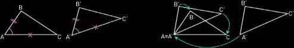

Il primo criterio di congruenza
Definizione 2.2.1. Due figure geometriche si dicono congruenti quando si possono sovrapporre una all’altra, in modo che coincidano punto per punto esattamente, senza essere deformate. □
Per indicare che le due figure A e B sono congruenti, in simboli scriviamo:
A ≌ B
o più comunemente
A = B
Due triangoli sono congruenti quando sono sovrapponibili punto a punto. tuttavia esistono tre criteri, noti come criteri di congruenza dei triangoli, che permettono di stabilire la congruenza in modo «più economico», confrontando fra loro coppie di lati e coppie di angoli e non tutte le coppie di punti che si possono individuare nei due triangoli.
Questi criteri mettono in relazione tre elementi del primo triangolo con i tra corrispondenti del secondo triangolo.
Se sappiamo che due triasngoli ABC e A'B'C' hanno congruenti i lati AB e A'B', i lati AC e A'C' e gli angoli compresi fra essi, possiamo pensare di sovrapporre i triangoli, punto per punto, spostando A'B'C' con un movimento rigido, in modo che A' coincida con A e si sovrappongano i lati A'C' e AC e gli angoli A' e A.
Osserviamo che:
AC ≅ A'C', quindi il punto C' coincide con C;
 ≅ Â', quindi il ato A'B' coincide con il lato AB;
AB ≅ A'B', quindi il punto B' coincide con B;
Possiamo allora accettare come postulato il seguente criterio.
Teorema 2.2.2 (Primo criterio di congruenza). Due triangoli sono congruenti se hanno ordinatamente congruenti due lati e l'angolo compreso fra i due lati □.
AB ≌ A'B' BC ≌ B'C', AB̂C ≌ A'B̂'C' ⇒ ABC ≌ A'B'C'
Two triangole are congruent if two of their sides and the angles between them are respectively congruent. This is sometimes called the side-angle-side (SAS) criterion.
Nota. Se l'angolo congruente non è quello compreso fra i lati congruenti, i due triangoli possono essere diversi, come mostra la seguente figura. I triangoli ABC e ABD hanno: il lato AB in comune; AC ≌ AD per costruzione; l'angolo β in comune.
L'angolo β non è l'angolo compreso fra AB e AC e infatti la figura mostra che ABC e ABD non sono congruenti.
Teorema 2.2.3 (Secondo criterio di congruenza). Due triangoli sono congruenti se hanno ordinatamente congruenti un lato e gli angoli a essi adiacenti. □.
BC ≌ B'C', AB̂C ≌ A'B̂'C', BĈA ≌ B'Ĉ'A' ⇒ ABC ≌A'B'C'
Two triangle are congruent if a side and its two adjacent angles are respectively congruent. This is sometimes called the angle-side-angle (ASA) criterion.
Dim. Ragioniamo per assurdo negando la tesi, supponendo cioè che i triangoli non siano congruenti. Deduciamo subito che nono può essere AB ≌ A'B̂', altrimenti i triangoli sarebbero congruenti per il primo criterio. Infatti avrebbero ordinamente congruenti i lati AB e AC e l'angolo  compreso tra i due lati.
Supponiamo allora che AB < A'B'.
Dovrebbe esistere un punto P, interno ad A'B', con A'P ≌ AB.
I triangoli A'PC' e ABC sarebbero congruenti per il primo criterio, avendo A'P ≌ AB, A'C' ≌ AC, Â ≅ Â'.
In particolare, sarebbe PĈ'A' ≅ BĈA. Poiché l'angolo B'Ĉ'A' non può essere congruente a una sua parte, siamo giunti a una contraddizione. Allora la negazione della tesi è falsa e i triangoli ABC e A'B'C' sono congruenti.
Si procede in modo analogo se si suppone AB > A'B'. □